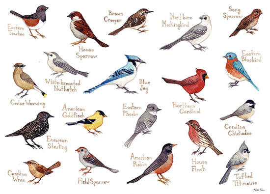

| Ecological group | Below bounds | Above bounds | Within bounds | Insufficient data |
|---|---|---|---|---|
| All MBCA species | 151 | 9 | 208 | 53 |
| Forest birds | 36 | 0 | 61 | 2 |
| Waterfowl | 10 | 9 | 39 | 10 |
| Other waterbirds | 19 | 0 | 41 | 18 |
| Shorebirds | 31 | 0 | 14 | 5 |
| Grassland birds | 18 | 0 | 4 | 0 |
| Aerial insectivores | 21 | 0 | 8 | 1 |
| Source: | https://www.canada.ca/en/environment-population-birds.html (2013) | |||
Source:
Canadian Wildlife Service, Environment Canada, 2014.
Note: “Species” groups are as in State of Canada's Birds but include only species addressed in the Migratory Birds Convention Act (MBCA).